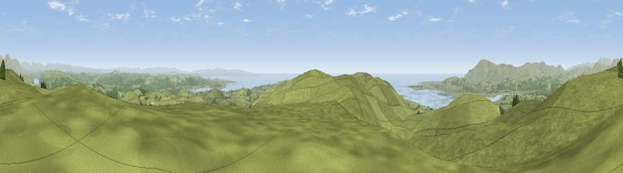

Viewpoint near Broughton Beck
#990 in England · top 8% of its area beats it · near Broughton BeckWhere it is
The exact computed spot (SD 26025 83325). Click the marker for map links.
The view, rendered

A 360° render of this exact spot computed from the terrain model, tree cover and land cover — summer colours, afternoon light, calibrated against photographs of famous viewpoints. Real trees, hedges and buildings will differ in detail.
The panorama
Grey silhouette: terrain skyline in each direction (720 bearings, Earth curvature and refraction included). Dashed green: skyline with trees (+15 m) and buildings (+8 m) as obstacles. Blue strip: how far the ground is visible on each bearing.
Where the view opens
Wedge length = distance to the farthest visible ground on that bearing (vegetation-aware). Rings at 10, 25 and 50 km.
What fills the view
85% grassland · 8% woodland · 6% water
Angular shares of the visible panorama (visual magnitude), not map area. Landscape diversity 0.25 (0–1 Shannon).
Key numbers
More beautiful places nearby
The staircase of upgrades: each row has a higher view potential than everything closer. Driving times are estimates from straight-line distance, calibrated against real road routing — check an actual route before setting out.
| Place | Direction | Drive | Score |
|---|---|---|---|
| Viewpoint near Grizebeck | N · 1 km | ~2 min | 80.9 |
| Viewpoint near Wall End | W · 1 km | ~4 min | 83.2 |
| Viewpoint near Soutergate | SSW · 4 km | ~10 min | 83.6 |
| Great Hill | NNE · 10 km | ~19 min | 83.7 |
| Viewpoint near Cartmel | ESE · 10 km | ~20 min | 87.2 |
| Viewpoint near Whitbeck | W · 13 km | ~23 min | 88.1 |
| Viewpoint near Finsthwaite | ENE · 14 km | ~25 min | 90.3 |
| The Knoll | S · 396 km | ~379 min | 91.0 |
54.24025, -3.13657 · source: screening · position refined by local search. Computed location — check access rights before visiting.